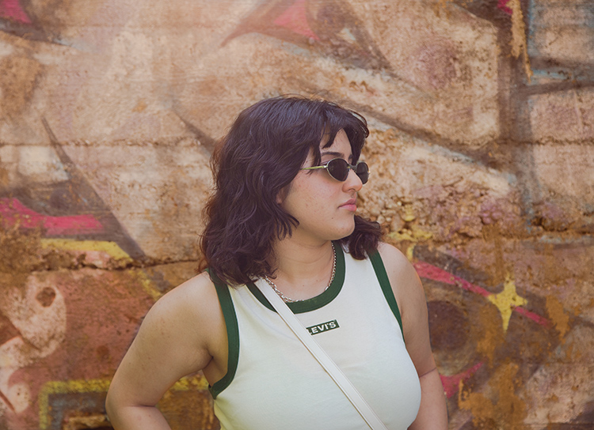
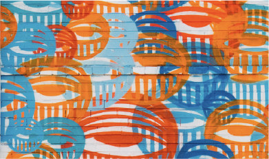

Street Jam Festival
Le 15 octobre 2023, Vevey célèbre les tendances actuelles en matière d'art urbain et de musique, et rassemble une communauté de personnes partageant les mêmes intérêts. Notre événement offre une variété d'activités pour les visiteurs, notamment des démonstrations de skate réalisées par des professionnels, des ateliers de graffiti interactifs, des expositions d'œuvres d'art urbain innovantes et des performances musicales d'artistes locaux et internationaux. Notre objectif est de créer un espace pour que les artistes de rue et les amateurs de culture urbaine puissent se rencontrer, partager leur savoir-faire et leur passion pour l'art urbain et s'immerger dans une ambiance urbaine unique. Notre festival propose également une sélection de stands de restauration proposant une cuisine de rue authentique pour ravir les papilles des visiteurs.
Tags/
Graffiti/
Street art
- 09h00-11h00: Sessions libres
- 10h00-12h00: Atelier de graffiti interactif avec Elisa
- 13h30 – 17h00: Démonstration de Manos68 et sessions libres
Nous sommes ravis de présenter notre invité d'honneur pour le Street Jam Festival, la célèbre graffeuse Elisa. Originaire de Suisse, Elisa a commencé à expérimenter avec les bombes aérosols à l'âge de 14 ans et a depuis créé une réputation internationale pour son style unique et expressif. Son travail est influencé par la culture hip-hop, la street culture et l'art urbain contemporain, et est souvent caractérisée par des couleurs vives, des formes organiques et des détails saisissants.
Elisa est une figure emblématique de la scène graffiti, et son travail a été présenté dans des expositions du monde entier. En plus de son travail de graffeur, elle est également un mentor pour la jeune génération d'artistes urbains, organisant des ateliers et partageant son expérience avec la communauté. Nous sommes honorés d'accueillir Elisa en tant qu'invitée d'honneur de notre festival urbain annuel, et nous sommes impatients de voir son talent en action lors de notre atelier de graffiti interactif. Les participants auront l'occasion d'apprendre directement d'elle, de découvrir son processus créatif et de s'inspirer de son travail unique.
Skate
- 09h00-10h00: Inscriptions et accueil des participants
- 10h00-10h30: Démo de skateboard par des professionnels
- 10h30-11h30: Atelier d'initiation au skateboard pour les débutants
- 11h30-12h30: Session de skateboard libre pour les participants
- 12h30-13h30: Pause
- 13h30-14h00: Concours de skateboard "Meilleure figure" pour les participants
- 14h00-15h00: Session de skateboard libre pour les participants
- 15h00-15h30: Démo de skateboard par des professionnels
- 15h30-16h30: Atelier de skateboard "Street Style" pour les skateurs expérimentés
- 16h30-17h00: Remise des prix pour le concours "Meilleure figure"
- 17h00: Fin de la journée
Veuillez noter que les horaires sont donnés à titre indicatif et peuvent être sujets à des changements. Les participants seront informés des horaires définitifs lors de leur inscription à l'événement.
Musique
- 15h00-17h00: Atelier de musique urbaine pour les amateurs de beatmaking et de rap
- 17h00-23h00: Concert de hip-hop avec des artistes locaux et nationaux
- 24h00: Fin de la journée
Street Food
Notre festival vous propose une variété de stands de restauration sur place tout au long de la journée. Vous pourrez notamment découvrir:
Oh my b!:
Un camion de restauration rapide proposant des
burgers artisanaux avec des ingrédients frais et locaux.
Con cilantro wey:
Un stand proposant des tacos et des burritos à
la viande grillée ou végétarienne, accompagnés de guacamole, de salsa
et de sauces épicées.
Frankie's Hot Dogs:
Un stand proposant des hot-dogs traditionnels,
avec une variété de garnitures et des frites fraîches et croustillantes.
Poke Paradise:
Un stand proposant des bols de poke hawaïen, avec du
poisson frais, du riz, des légumes, des fruits et des sauces savoureuses.
La Bretagne ambulante:
Un stand proposant des crêpes et des gaufres
sucrées ou salées, avec une variété de garnitures comme des fruits
frais, du Nutella, du fromage, des œufs et des légumes.
Smoothies Stop:
Un stand proposant des smoothies et des jus de
fruits frais, avec des mélanges de saveurs originales et saines pour
une pause rafraîchissante.

Contact
Lieux
Street Jam Festival
Place du Marché 2
1800 Vevey
info@streetjamfestival.ch